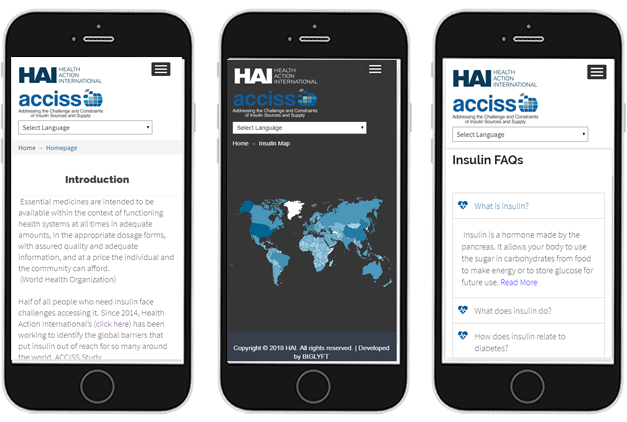
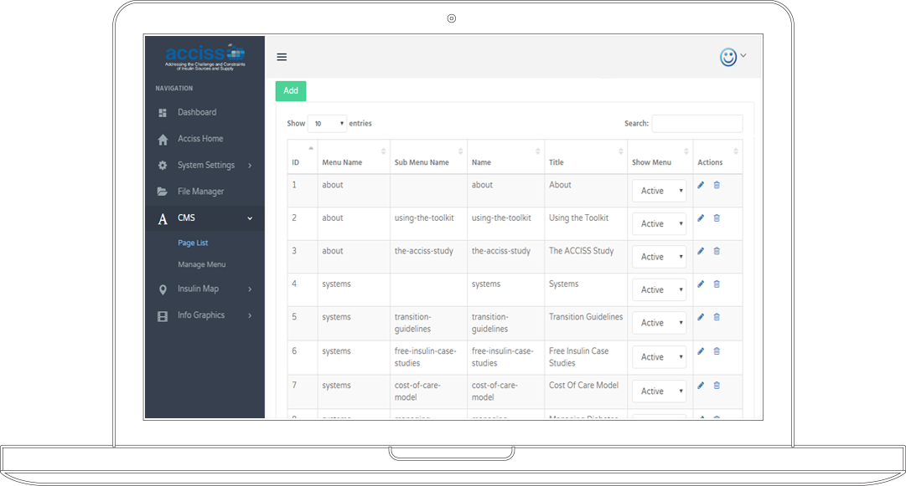
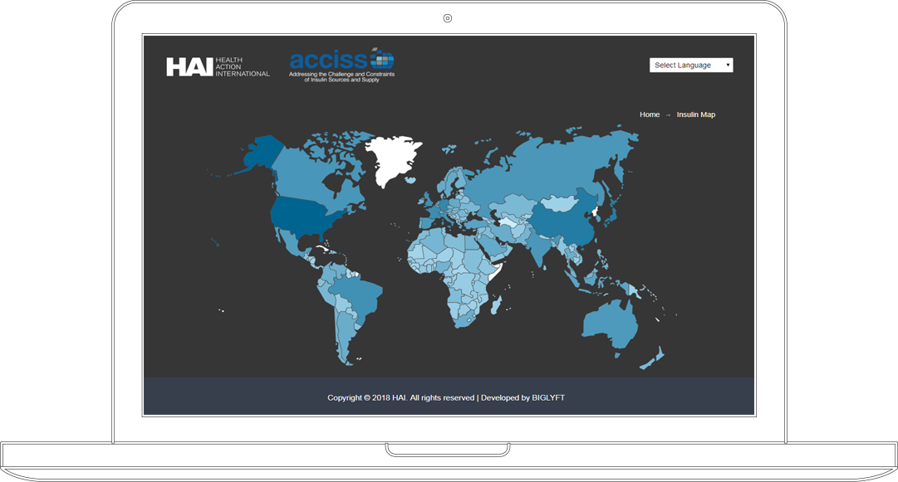
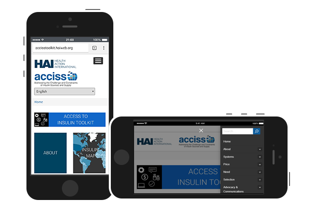
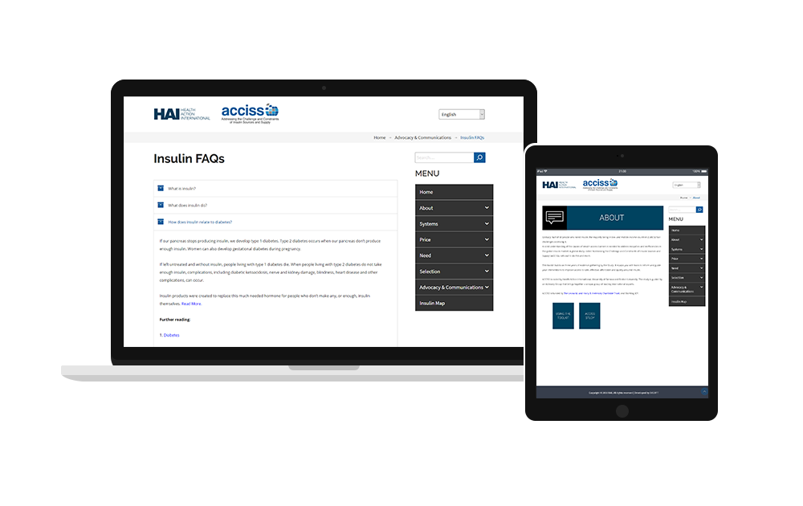

ACCISS Toolkit, onderdeel van Health Action International met zijn kantoor in Amsterdam, is een eerste in zijn soort online platform ter wereld dat een verscheidenheid aan informatie en hulpmiddelen presenteert die op een gebruiksvriendelijke manier de belemmeringen voor toegang tot insuline aanpakken

Wereldwijd hebben ongeveer 100 miljoen mensen insuline nodig om hun diabetes te beheren en gezonder en langer te leven. Geschat wordt echter dat 1 op de 2 van deze mensen problemen heeft met de toegang tot en / of het bieden van dit belangrijke geneesmiddel. Om onrechtvaardigheden en inefficiënties op de wereldwijde insulinemarkt aan te pakken, is identificatie van wat barrières veroorzaakt om toegang te krijgen tot insuline nodig.
De studie "De uitdagingen en beperkingen van insuline bronnen en voeding aanpakken (ACCISS)" gaat dit doen.
Het bedrijf voerde een driejarig onderzoek uit in drie fasen:
Fase 1: de insulinemarkt vanuit verschillende invalshoeken in kaart brengen
Fase 2: Begrijpen wie insuline produceert en uitdagingen in het distributiekanaal
Fase 3: Interventies ontwikkelen om de toegang tot insuline te verbeteren

Ons doel was om een online tool te bouwen die de informatie uit de ACCISS-studie samenvat, waardoor deze presentabel en praktisch wordt voor een divers wereldwijd publiek.

De taak was vooral gericht op het maken van de achterkant van het platform en een basisontwerp voor de voorkant van de toolbox. Het is erop gericht gebruikersvriendelijk te zijn: zowel voor de eindgebruiker in meerdere landen en bandbreedtes, als voor het personeel dat belast zal worden met het uploaden van nieuwe gegevens en factsheets naar het platform, vooral omdat dit een levende gereedschapskist zal zijn met nieuwe tools die doorlopend worden geüpload.
De belangrijkste uitdagingen omvatten het volgende -
1). Een op maat gemaakte back-end met CMS en functies om de volledige toolkit te beheren.
2). Een interactieve wereldkaart met actuele landspecifieke statistieken over prijs, aantal insulinegebruikers en een groot aantal andere velden, gebaseerd op datafeed van back-end. Alle gegevens die via de interactieve kaart worden gegenereerd, zijn download- en afdrukklaar.
3). Ondersteuning in meerdere talen, waaronder Engels, Spaans, Russisch, Frans, Chinees en Arabisch.
4). Een gegevensgestuurd platform, met de functionaliteit van een gegevensaggregator die de bits van gegevens en rapporten meeneemt en combineert (of specifieke gegevens verzamelt) om uitvoer te genereren.
De tijdlijn voor het project was vastgesteld op 4 maanden vanaf de overeenkomst tot de definitieve lancering van de pilot.


PHP with LARAVEL Framework
JAVASCRIPT
JQUERY
AJAX
HTML
CSS

We hebben het project systematisch in verschillende mijlpalen onderverdeeld. Elke mijlpaal werd afzonderlijk uitgevoerd en beoordeeld en de klantfeedback werd onmiddellijk genomen om de mijlpaal precies af te stemmen op de visie van de klant. Eventuele wijzigingen of vereiste verbeteringen zijn geïmplementeerd voordat de volgende mijlpaal is gestart. We hebben de cliënt van tijd tot tijd toegang gegeven tot onze ontwikkelserver, zodat de klant precies wist wat er aan de hand was.
Over het algemeen werd het project uitgesplitst naar de volgende mijlpalen -
1). Planning
2). Frontend Design
3). Backend Design
4). Database-integratie
5). Interactief Map Design
6). Development van Content Management System
Bij het afleveren van projecten is aan de klant een stapsgewijze gebruikershandleiding verstrekt om de volledige toolkit vanaf de backend te beheren. We hebben ook een trainingssessie aan de klant gegeven.
Na levering van het project hebben we een bufferperiode aan onze klant ter beschikking gesteld waarin we kosteloos het verzoek van de klant hebben gesteund.

"We asked BIGLYFT to build an online toolkit for us. BIGLYFT was receptive and flexible to our needs and met all of our deadlines in a timely fashion. They went above and beyond to ensure we were happy with our final product."
- Molly Lepeska, Project Manager (Health Action International) -